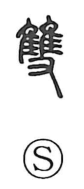

双

Kun: futa, futatsu | On: sou
pair ・ set of two ・ double
Explanation
Originally written as 雙, the character combines the bird element (隹) with the hand (又) to depict a hand holding two birds. From this concrete scene it came to mean a matched pair, things set together or in alignment, and by extension simply “two.” In contrast, 隻 shows a single bird held in a hand, while the simplified form 双 suggests two hands placed side by side to convey the idea of a pair. Hence expressions like isso, “one pair,” name something that forms a set of two.